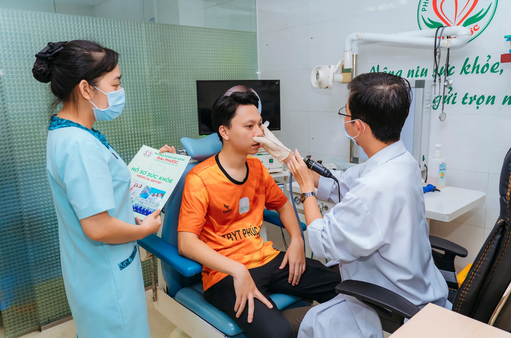

KHÁM TAI MŨI HỌNG TRẺ EM TP.HCM: 10 DẤU HIỆU CHA MẸ CẦN BIẾT
Tại Sao Cần Quan Tâm Đến Việc Khám Tai Mũi Họng Trẻ Em?
Bệnh tai mũi họng ở trẻ em là vấn đề sức khỏe vô cùng phổ biến tại TP.HCM, đặc biệt trong thời tiết thay đổi. Khám tai mũi họng trẻ em đang là nhu cầu tìm kiếm cao của các bậc phụ huynh khi con có các dấu hiệu bất thường.
Trẻ em dưới 6 tuổi có hệ miễn dịch chưa hoàn thiện, cấu trúc giải phẫu đường thở trên còn non nớt, khiến các bé dễ mắc các bệnh lý về tai, mũi, họng hơn người lớn. Việc nhận biết sớm các dấu hiệu bất thường giúp cha mẹ kịp thời đưa con đi khám, tránh biến chứng nguy hiểm.
Tại Phòng khám Đa khoa Đại Phước - địa chỉ khám tai mũi họng trẻ em TP.HCM uy tín, với kinh nghiệm nhiều năm từ bác sĩ chuyên môn, chúng tôi thường xuyên tiếp nhận và điều trị thành công nhiều trường hợp bệnh tai mũi họng ở trẻ em.
10 Dấu Hiệu Bệnh Tai Mũi Họng Trẻ Em Cha Mẹ Cần Biết
1. Sốt cao kéo dài trên 38,5°C
Dấu hiệu: Trẻ sốt cao trên 38,5°C kéo dài hơn 24-48 giờ, không đáp ứng với thuốc hạ sốt thông thường.
Nguy hiểm: Có thể là dấu hiệu viêm nhiễm nghiêm trọng ở vùng tai mũi họng, đặc biệt khi kèm co giật, khó thở, li bì.
Khi nào cấp cứu: Sốt trên 39°C, co giật, khó thở, bỏ bú, nôn mửa nhiều, sốt kéo dài trên 3 ngày cần khám tai mũi họng trẻ em ngay lập tức.
2. Đau tai, trẻ thường xuyên kéo tai hoặc chạm vào tai
Dấu hiệu: Trẻ quấy khóc, khó chịu, liên tục kéo tai hoặc chạm vào vùng tai, đặc biệt khi kèm sốt.
Nguyên nhân: Viêm tai ngoài hoặc viêm tai giữa - hai bệnh lý rất phổ biến ở trẻ em.
Biến chứng: Thủng màng nhĩ, giảm thính lực, ảnh hưởng phát triển ngôn ngữ nếu không điều trị kịp thời.
Thông tin liên quan: Nguyên nhân và Triệu chứng Viêm tai giữa ở trẻ
3. Khó nuốt, từ chối ăn uống - Triệu chứng Viêm Amidan Trẻ Em
Dấu hiệu: Trẻ đột ngột từ chối ăn uống, khóc khi nuốt, chỉ muốn ăn đồ lỏng, mềm.
Nguyên nhân: Viêm họng, viêm amidan ở trẻ hoặc các bệnh lý khác ở vùng họng.
Hậu quả: Ảnh hưởng dinh dưỡng, có thể dẫn đến mất nước, chậm phát triển.
4. Nghẹt mũi kéo dài hơn 1-2 tuần
Dấu hiệu: Nghẹt mũi kéo dài hơn 1 tuần mà không có dấu hiệu thuyên giảm.
Nguyên nhân: Viêm xoang, viêm mũi dị ứng, hoặc viêm V.A quá phát.
Ảnh hưởng: Khó ngủ, thở bằng miệng, ảnh hưởng ăn uống và sinh hoạt.
5. Ngủ ngáy, thở bằng miệng
 Ngủ ngáy, thở bằng miệng có thể là dấu hiệu viêm V.A quá phát cần điều trị
Ngủ ngáy, thở bằng miệng có thể là dấu hiệu viêm V.A quá phát cần điều trị
Dấu hiệu: Trẻ thường xuyên ngáy, thở bằng miệng, ngủ không sâu giấc, thức giấc nhiều lần.
Nguyên nhân: Viêm V.A quá phát, amidan to gây cản trở đường thở.
Nguy hiểm: Hội chứng ngưng thở khi ngủ (OSA), ảnh hưởng phát triển thể chất và trí tuệ.
6. Chảy mũi có màu sắc bất thường
Dấu hiệu: Dịch mũi có màu vàng, xanh, hoặc có mùi hôi. Chảy máu mũi thường xuyên.
Nguyên nhân: Nhiễm trùng vi khuẩn, viêm xoang, hoặc có dị vật trong mũi.
Lưu ý: Màu sắc dịch mũi không phải yếu tố quyết định để phân biệt virus và vi khuẩn.
7. Giảm thính lực hoặc không phản ứng với âm thanh
Dấu hiệu: Trẻ không phản ứng với tiếng gọi tên, âm lượng TV phải to hơn, thường xuyên hỏi lại.
Nguy hiểm: Ảnh hưởng nghiêm trọng đến phát triển ngôn ngữ, khả năng học tập và giao tiếp.
Nguyên nhân: Viêm tai giữa, ráy tai tích tụ, dị tật bẩm sinh, hoặc tác động thuốc.
8. Ho kéo dài không đờm
Dấu hiệu: Ho khan kéo dài, đặc biệt ho về đêm, thường kèm khàn tiếng hoặc mất tiếng.
Nguyên nhân: Viêm họng, viêm thanh quản, hoặc dịch mũi chảy ngược.
Cần lưu ý: Ho kéo dài có thể ảnh hưởng giấc ngủ và sinh hoạt của trẻ.
9. Thay đổi giọng nói
Dấu hiệu: Trẻ đột ngột bị khàn tiếng, nói ngọng, hoặc giọng nói khác lạ.
Nguyên nhân: Viêm thanh quản, viêm họng, hoặc có dị vật trong đường thở.
Khi nào cấp cứu: Khàn tiếng kèm khó thở, khó nuốt, ho ra máu, sốt cao.
10. Mệt mỏi, quấy khóc không rõ nguyên nhân
Dấu hiệu: Trẻ thay đổi tính cách, trở nên cáu gắt, mệt mỏi, ăn ngủ kém không rõ nguyên nhân.
Nguyên nhân: Trẻ có thể đang bị đau đớn hoặc khó chịu do các bệnh lý tai mũi họng tiềm ẩn.
Cần làm: Quan sát thêm các dấu hiệu khác và đưa trẻ đi khám để chẩn đoán chính xác.
Khi Nào Cần Đưa Trẻ Đi Cấp Cứu Ngay?
Cha mẹ cần đưa trẻ đến cơ sở y tế ngay lập tức khi có các dấu hiệu:
-
Sốt cao trên 39°C không hạ được
-
Khó thở, thở nhanh bất thường
-
Đau tai dữ dội, trẻ khóc thét liên tục
-
Chảy máu mũi nhiều không cầm được
-
Nuốt khó khăn, sặc cháy khi ăn uống
-
Tím tái môi, đầu ngón tay
-
Li bì, khó đánh thức
Quy trình khám tai mũi họng trẻ em tại Phòng khám Đại Phước
Bước 1: Thăm khám lâm sàng ban đầu
Bác sĩ sẽ hỏi về triệu chứng, thời gian xuất hiện, tiền sử bệnh lý của trẻ. Đây là bước quan trọng giúp định hướng chẩn đoán ban đầu.
Bước 2: Khám tai mũi họng chuyên khoa
Sử dụng các dụng cụ chuyên dụng như đèn soi tai, gương soi họng, bác sĩ sẽ kiểm tra tình trạng các cơ quan tai, mũi, họng của trẻ.
Bước 3: Nội soi tai mũi họng (nếu cần)
Với trang thiết bị nội soi hiện đại, bác sĩ có thể quan sát rõ ràng các bộ phận bên trong, phát hiện những bất thường khó thấy bằng mắt thường.
Bước 4: Xét nghiệm và chẩn đoán hình ảnh (nếu cần)
Tùy theo tình trạng bệnh, bác sĩ có thể chỉ định các xét nghiệm máu, hoặc chụp X-quang, CT-scan để chẩn đoán chính xác.
Bước 5: Tư vấn điều trị và chăm sóc
Bác sĩ sẽ đưa ra phương án điều trị phù hợp và hướng dẫn cha mẹ cách chăm sóc trẻ tại nhà.

Cách phòng ngừa bệnh tai mũi họng cho trẻ em
Giữ gìn vệ sinh cá nhân
-
Rửa tay thường xuyên: Dạy trẻ rửa tay bằng xà phòng sau khi chơi, trước khi ăn
-
Vệ sinh mũi họng: Súc miệng nước muối loãng, rửa mũi bằng nước muối sinh lý
-
Giữ ấm cơ thể: Mặc đủ ấm khi thời tiết thay đổi
Tăng cường sức đề kháng
-
Dinh dưỡng đầy đủ: Đảm bảo trẻ ăn đủ chất, nhiều rau xanh, trái cây
-
Hoạt động thể chất: Khuyến khích trẻ vận động, chơi ngoài trời
-
Ngủ đủ giấc: Trẻ cần ngủ 10-12 tiếng/ngày
Môi trường sống
-
Không khí sạch: Tránh khói bụi, khói thuốc lá
-
Độ ẩm phù hợp: Duy trì độ ẩm 40-60% trong phòng
-
Thông thoáng: Đảm bảo không gian sống thoáng mát
Đội ngũ bác sĩ tai mũi họng giàu kinh nghiệm
Tại Phòng khám Đa khoa Đại Phước, chúng tôi tự hào có đội ngũ bác sĩ chuyên khoa tai mũi họng với nhiều năm kinh nghiệm trong điều trị các bệnh lý ở trẻ em. Các bác sĩ đều được đào tạo bài bản, thường xuyên cập nhật kiến thức y khoa mới nhất.
Tìm hiểu thêm: Thông tin chi tiết các bác sĩ chuyên khoa khám tai mũi họng tại Đại Phước
Trang thiết bị hiện đại, an toàn cho trẻ em
Phòng khám được trang bị các thiết bị y tế hiện đại, đặc biệt phù hợp cho việc khám và điều trị trẻ em:
-
Hệ thống nội soi tai mũi họng: Hình ảnh rõ nét, ít xâm lấn
-
Thiết bị hút dịch mũi: An toàn, hiệu quả cho trẻ nhỏ
-
Hệ thống Xquang kỹ thuật số, máy CT-scan.
Khi nào nên khám định kỳ?
Ngoài việc khám khi có triệu chứng, cha mẹ nên đưa trẻ khám tai mũi họng định kỳ trong các trường hợp:
-
Trẻ mắc bệnh TMH tái phát: 3-6 tháng/lần
-
Trẻ có tiền sử viêm tai giữa: Theo dõi thính lực định kỳ
-
Trẻ có dị ứng: Khám khi thay đổi mùa
Lời khuyên từ chuyên gia
Việc chăm sóc sức khỏe tai mũi họng cho trẻ em đòi hỏi sự kiên nhẫn và quan sát tinh tế từ cha mẹ. Đừng chủ quan với những triệu chứng tưởng chừng như nhỏ, vì chúng có thể là dấu hiệu của những bệnh lý nghiêm trọng hơn.
Hãy luôn nhớ rằng, việc phát hiện và điều trị sớm sẽ giúp trẻ hồi phục nhanh chóng và tránh được những biến chứng không mong muốn. Khi có bất kỳ nghi ngờ nào về sức khỏe tai mũi họng của con, đừng ngần ngại liên hệ với chúng tôi để được tư vấn và hỗ trợ kịp thời.
Đặt Lịch Khám Ngay Hôm Nay
Đừng để các vấn đề tai mũi họng ảnh hưởng đến sự phát triển của trẻ. Hãy đặt lịch khám ngay khi phát hiện bất kỳ dấu hiệu bất thường nào!
Thông tin liên hệ:
-
Hotline: 1900 599 941 - 0938 829 831
-
Địa chỉ: 829 đường 3 tháng 2, P7, Q11, TP.HCM
-
Website: phongkhamdaiphuoc.vn
-
Giờ làm việc: T2-T7: 6:00-20:00 | CN: 6:00-11:30
"Sức khỏe tai mũi họng của con là ưu tiên hàng đầu!"

Các tin khác

.png)


ĐĂNG KÝ NHẬN BẢN TIN

Phòng Khám Đa Khoa Đại Phước
- 829 đường 3 tháng 2, Phường Minh Phụng, Thành phố Hồ Chí Minh
- 1900 599 941 - 0938 829 831
- (028) 3955 7999
- info@ytedaiphuoc.vn
-

6:00 - 11:30 (Chủ Nhật)


GPKD số : 0312023683 cấp ngày: 29/10/2012 Bởi Sở Kế Hoạch và Đầu Tư TP.Hồ Chí Minh
Đại diện: Tống Nguyễn Diễm Hồng